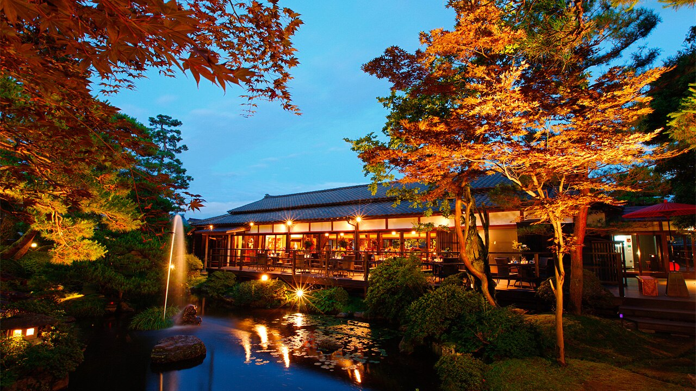
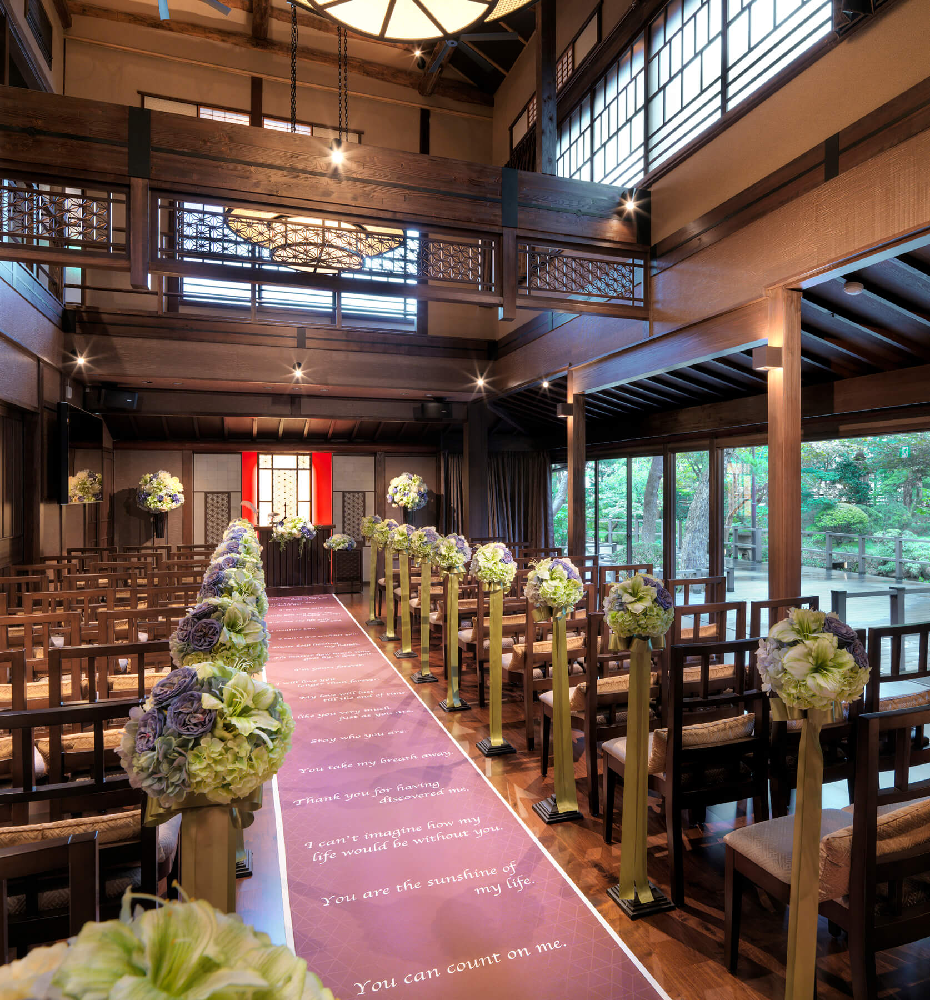
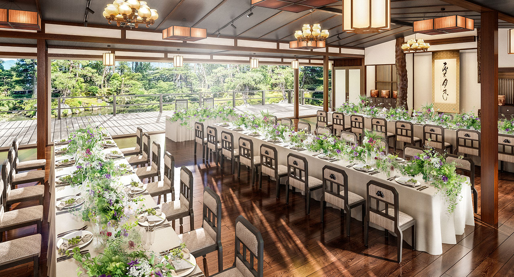

Snow, mountains, and the start of something new
You want to get married somewhere that feels nothing like Perth. No templated ceremony in a function room. No going through the motions. You want to step off a plane into a different world, look out at snow-covered mountains, and say your vows in a place that takes your breath away. Then, still in the high of it, you want to go skiing together for the first time as a married couple.
There is a Chinese tea ceremony for your parents. There is a formal Western ceremony for you and Lillian. There is good food (no seafood for you, Daniel, and we hear you on that). There is time with the people who matter most, whether that ends up being 20 close friends or a bigger gathering with family from Perth and Malaysia.
Lillian wants beauty and atmosphere. Daniel, you want to keep the stress low, the budget realistic, and make sure Lillian's vision comes through even though she would rather not deal with the planning. You have not been to Japan before. She has, and she wants to see somewhere new. We think the mountains of Hokkaido will be new for both of you.
We understand the concerns: cost, not being able to visit beforehand, and translating Lillian's aesthetic into reality from the other side of the world. That is exactly what we do. Juri is on the ground, bilingual, and will be your eyes and taste on every venue and vendor decision. You will not need to fly here first. We will bring Japan to you through detailed visuals, video walkthroughs, and honest recommendations until you arrive and see it all in person.
Seven days with your guests across Tokyo and Hokkaido. Then four days for just the two of you.
You land at Narita or Haneda and make your way to your hotel. No rush, no schedule. Settle in, shake off the flight, get your bearings.
Later in the afternoon or evening, you will meet with us. Juri and Eamon will walk you through the final details: the timeline for the week, vendor confirmations, any last questions. This is the calm before the celebration starts. Think of it as your pre-game briefing.
If early-arriving guests are already in town, a casual dinner together is an option, but nothing formal. The real welcome comes tomorrow.
A full day in Tokyo with your guests. Daniel, this is your shot at some of the history you have been wanting to see. For Lillian, it is a chance to eat her way through the city and discover new corners she has not explored on previous trips.
We can arrange group activities or let everyone explore on their own and reconvene in the evening. Options range from Asakusa and Meiji Shrine to Akihabara for the anime and manga shops (we know you like manga, Daniel), to Tsukiji outer market for Lillian's foodie heart.
The evening is the Welcome Dinner. This is the first time your whole group is together. We will book a private or semi-private dining space that fits your group size, with a menu that works for everyone, including non-seafood options. Think izakaya-style shared plates, or a seated multi-course meal. Casual, warm, everyone getting to know each other before the main event.
This day is split. Lillian gets a dedicated beauty day: nails, a Japanese head spa (one of those things you never knew you needed), facial, and whatever else she wants to prepare for the big days ahead. Tokyo is one of the best cities in the world for this, and Juri will curate the appointments and accompany her if helpful.
Daniel, this is your free day. Explore Tokyo on your own terms. If the Hiroshima memorial is a priority (it is a 4-hour bullet train ride each way), we can plan that as a day trip. Alternatively, there is plenty in Tokyo: the Edo-Tokyo Museum, Yasukuni Shrine's war museum, or the Showa-era exhibits if modern history is your focus. Or just wander. Tokyo rewards wandering.
Guests are free to do their own thing. We can provide a curated list of recommendations for the group.
The whole group flies from Tokyo to New Chitose Airport in Hokkaido. The flight is about two hours. From there, it is a bus or train ride to the Tomamu area, roughly 90 minutes through increasingly snowy countryside.
You arrive at the resort and check in. The landscape changes dramatically from Tokyo: wide valleys, snow-heavy trees, mountain ridgelines. This is where the wedding energy shifts. Everything starts to feel real.
The evening is relaxed. Settle into the resort, enjoy the property, have dinner together. Some resorts in the area have onsen (hot spring baths), which are the perfect way to decompress after travel. Tomamu's outdoor bath with views of the frozen forest is something special.
This day belongs to family. The Chinese tea ceremony is held in a private space at the resort, with both sets of parents and close family present. This is the moment that honours tradition: serving tea to elders, receiving blessings, connecting the two families formally.
We will work with you on the details of how to structure the ceremony. Some couples keep it very traditional, others adapt it to their own style. The important thing is that your parents feel seen and respected, which Daniel, you made clear is a priority.
The rest of the day is unstructured. Guests can explore the resort, try snowshoeing, or simply enjoy the mountain setting. If Lillian wants to do a bridal portrait shoot in the snow (which we highly recommend with this backdrop), this afternoon is ideal.
This is it. A formal Western ceremony in one of the most stunning settings in Japan. Snow outside the windows. Your closest people in the room. A worship song if you want one. And then you are married.
After the ceremony, your group gathers for the reception. Dinner, toasts, the atmosphere you and Lillian want. Formal but warm. Beautiful but not over the top. The venue and the snow do the heavy lifting on aesthetics.
Based on Daniel's interest and our research, we are focusing on Hoshino Resorts Tomamu in Hokkaido. Two chapel options stand out.
Both Tomamu chapels require that you use their in-house dress rental service. We know Lillian has strong aesthetic preferences, so we want to flag this early. The dress selection is high-quality and well-maintained, but it does mean bringing your own dress is not an option at this venue. If this is a dealbreaker, we have alternative venue options in Nagano and Niigata that allow your own dress. We can walk through those on our next call.
If the dress requirement or capacity limits are a concern, these are our backup options. All offer snow, mountains, and skiing nearby.
A century-old estate in Niigata, originally founded as a traditional ryotei (Japanese fine dining restaurant) in the Taisho era. The grounds include a 1,000-tsubo Japanese garden designed by master landscaper Sakai Biseki, with a pond, stone bridges, and seasonal plantings that transform completely in winter. The entire venue is reserved for one couple per day.
The chapel is a double-height space with floor-to-ceiling windows that open directly onto the garden. You can hold a Christian ceremony, a Shinto ceremony in their on-site shrine, or a non-religious personal vow ceremony. The reception hall seats up to 110 guests with terrace access and garden views. Unlike Tomamu, you can bring your own dress, choose your own florist, and customise the ceremony and decor to match Lillian's vision.



Our take. If the dress rental requirement at Tomamu is a concern, or if your guest list grows beyond 36, Kobayashiro is the strongest alternative. The garden in winter is as visually striking as the Tomamu chapels, and you get far more flexibility on every detail. Juri can arrange a video walkthrough of the property before your next call.
No alarms. No schedule. You wake up married.
A relaxed family lunch brings everyone together one more time. Nothing formal. Just good food and good company while the memories from yesterday are still fresh.
The rest of the day is open. Some guests might want to try skiing or snowboarding. Others might prefer the onsen, a walk through the snowy resort grounds, or simply doing nothing at all. This is the exhale after the celebration.
Guests head home. Some may fly back to Perth or Malaysia directly from New Chitose Airport. Others might loop back through Tokyo for a few more days on their own.
For you and Lillian, this is where the honeymoon begins. Your group trip ends and your private adventure starts.
This is what started the whole idea. Snow. Skiing. Something new together.
If you are already in Hokkaido, you have world-class ski resorts at your doorstep. Furano, Tomamu itself, or the famous powder of Niseko are all within reach. For two near-beginners, the lesson programs here are excellent and the snow is forgiving.
Alternatively, if you want a change of pace, a night or two at a traditional ryokan (Japanese inn) is one of the most memorable experiences Japan offers. Private onsen, kaiseki dinner served course by course, tatami rooms, snow falling outside the window. We can find one with non-seafood menu options.
The last day, you make your way to the airport and fly home. Or extend the honeymoon if you want to see more of Japan. The Hiroshima memorial is still on the table if you did not make it on Day 3, and there is always Osaka for Lillian's food obsession.
Your own flights and accommodation (we will provide recommendations and help coordinate group bookings). Your personal wedding attire if using a non-Tomamu venue. Your vows. And ideally, a mood board from Lillian so we can bring her aesthetic vision to life. That is it.
Bilingual coordination. Juri is a native Japanese speaker born and raised in Tokyo. Every vendor email, every venue negotiation, every phone call happens in Japanese. You will never need to worry about language being a barrier to getting exactly what you want.
You have two options. The full multi-day Japan experience covers Tokyo, Hokkaido, welcome dinner, tea ceremony, ceremony, and honeymoon. But if budget is the priority, there is a leaner version that focuses on the wedding day itself.
Neither is better or worse. The full itinerary gives your guests the complete Japan experience. The wedding-day-only option keeps costs down and puts your budget where it matters most: the ceremony and the celebration.
The Tomamu chapel package from Hoshino Resorts covers the ceremony, chapel, basic florals, on-site coordination, reception dinner with food and drink, and dress rental. It is a set package with limited creative customisation, but the venue and setting do the heavy lifting. On top of that, we source and coordinate your photographer and hair/makeup artist, and we are there on the day to make sure everything runs smoothly.
| Category | Estimated (AUD) |
|---|---|
| Tomamu chapel package (ceremony, florals, coordination, reception dinner, dress rental) | $16,000 – $22,500 |
| Photography (ceremony + reception, single day) | $2,500 – $4,000 |
| Hair & makeup (wedding day) | $500 – $800 |
| Planning fee | $5,700 – $7,150 |
| Estimated Total | $24,700 – $34,450 |
What's not included.
Flights, accommodation (yours and your guests'), travel insurance, and any pre or post-wedding activities including honeymoon. Accommodation at Tomamu runs approximately AUD $250–$450 per room per night. Guests are responsible for their own transport to and from the resort. Shuttle buses run from New Chitose Airport, approximately 90 minutes.
Venue capacity.
The Chapel on Water accommodates up to 36 guests. The Ice Chapel accommodates up to 24 guests and is only available mid-January to mid-February. If your guest count exceeds 36, we would need to explore alternative venues in Nagano or Niigata, which may also offer more flexibility on dress and decor. We can walk through those options on our next call.
The wedding-day-only option is the foundation. If budget allows, any of the following can be layered on. We can price these specifically for your group size.
| Category | Estimated (AUD) |
|---|---|
| Ceremony venue (Tomamu chapel) | $17,000 – $24,000 |
| Reception dinner | $3,000 – $6,000 |
| Welcome dinner (Tokyo) | $1,500 – $3,000 |
| Photography | $3,000 – $5,000 |
| Florals and decor | $1,500 – $3,000 |
| Hair, makeup, beauty day | $800 – $1,500 |
| Tea ceremony setup | $500 – $1,000 |
| Transport (Tokyo to Hokkaido, local) | $2,000 – $4,000 |
| Planning fee | $11,700 |
| Estimated Total | $41,000 – $59,200 |
| Category | Estimated (AUD) |
|---|---|
| Ceremony venue | $20,000 – $30,000 |
| Reception dinner | $8,000 – $15,000 |
| Welcome dinner (Tokyo) | $4,000 – $7,000 |
| Photography | $3,500 – $6,000 |
| Florals and decor | $2,500 – $5,000 |
| Hair, makeup, beauty day | $800 – $1,500 |
| Tea ceremony setup | $500 – $1,000 |
| Transport (Tokyo to Hokkaido, local) | $4,000 – $8,000 |
| Planning fee | $11,700 |
| Estimated Total | $55,000 – $85,200 |
An honest note about budget.
Daniel, you mentioned a budget of AUD $20,000 – $35,000. We want to be upfront: for a multi-city destination wedding in Japan with a ceremony at a premium venue like Tomamu, the intimate scenario (20-40 guests) will likely land in the AUD $41,000 – $59,200 range once all costs are factored in. The larger scenario (60-80 guests) would be significantly higher.
There are real ways to bring costs down. Choosing a Nagano or Niigata venue instead of Tomamu can reduce the venue cost substantially. Keeping the guest count on the lower end (20-30) has the biggest impact on food, transport, and accommodation costs. We can also be strategic about where to invest and where to save.
We would rather show you the real numbers now than surprise you later. On our next call, we can work through which levers matter most to you and build a plan that fits.
These estimates do not include: your flights, personal accommodation, travel insurance, wedding attire (if using an alternative venue), or honeymoon expenses. Accommodation at Tomamu runs approximately AUD $250 – $450 per room per night.
Walk through this proposal together with Lillian. You ask questions, we refine. Nothing is locked until you are both happy with the plan.
Take the time you need. Talk it over. Come back with questions or changes. We will adjust the plan and budget as many times as it takes.
Once you are ready, a deposit secures your date and we begin. Venue booking, vendor outreach, the detailed planning starts immediately.
50% deposit to begin · 50% balance due 90 days before the wedding
Juri & Eamon
juri@marriedinjapan.com
Married in Japan